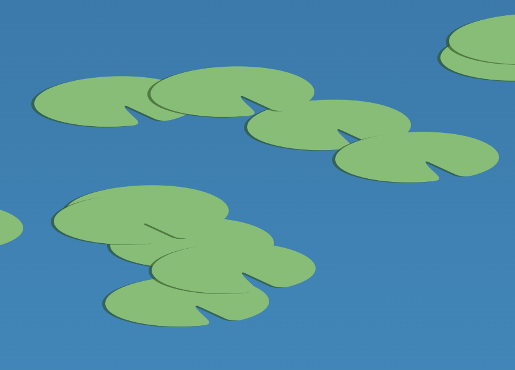

For this interactive assignment I thought it would be fun to make lotus flowers bloom whenever a mouse hovered over them. I find these flowers particularly beautiful because of their ability to thrive in challenging environments. I really appreciate their diverse colors and symbolic meanings of rebirth and resilience. To start with this assignment, I first wanted to create the environment for these flowers.
Lotus flowers grow in muddied water among an abundance of water lilies, so creating those elements was my first priority. I decided to go with a gradient theme early on to emulate the vibrant colors better. This meant that for the water, I used a blue to near-black gradient to create a sense of depth. I animated the position of the gradient to make it continuously change and a sense of movement.
I started with circles to create the water lilies, but after some brief experimentation, I switched over to a cartoon image. This allowed me to customize the lily pad easily since I could open photoshop and quickly test different visuals. I added a gradient mask and some subtle shadows to create something interesting.
Once I made my water lily, I added a floating animation to the overall element. This made it seem like the wit was floating along the water surface. I later changed the duration of the animation so the water lilies would float at different paces.
Creating the flower was the hardest part of the process. I first created a container called flower that would contain all the petals, leaves, and root. I used a border radius to create the shape of the petals. I then tried to spread them apart. Figuring out the rotation and position for each one was rather tedious. I used transform origin to make the rotation easier. But I eventually went searching for a simple code that would spread the petals out evenly. I came across this which helped me achieve that desired effect:
transform: scale(1.2) rotate(var(--petal-rotate));
I later had to id some petals specifically to resize them and move them down. This was to create a foreshortening effect and give a sense of depth. I did the same with the leaves by giving each one a unique id and flipping + rotating them to spread out beneath the blooming flower:
transform: scaleX(-1) rotate(170deg)translate(25px, 0px);
I added a root as well to connect the flower to the water. I used a gradient that allows the root to fade into the depths easily.
Once I created the flower, I need to figure out how to resize it. I wanted to make sure I can do it without changing the petals themselves. This was to prevent them of changing their specific positions. I ended up using a scale command in the flower container
I used a couple randomizing factors for this assignment. One of them was actually reused from a previous excerise I did a couple weeks ago. I used a createElement function to randomize where the flowers would appear. It was convenient because the flower has a lot of children elements with precise rotation and positions. By creating a parent with a random position, and then later appending all these specific children, I was able to multiple the number of flowers without having to fix up each one’s appearance.
I used a simpler randomizer function for the lily pads since it didn’t require any children elements.
I also used a color randomizer function to assign each flower a different color. I first created an array that contained a list of gradients. I referenced an image to pick these colors. Then after picking an array number, it would apply the color to the newly created flower.
After cleaning up the code a bit I finally had this result.